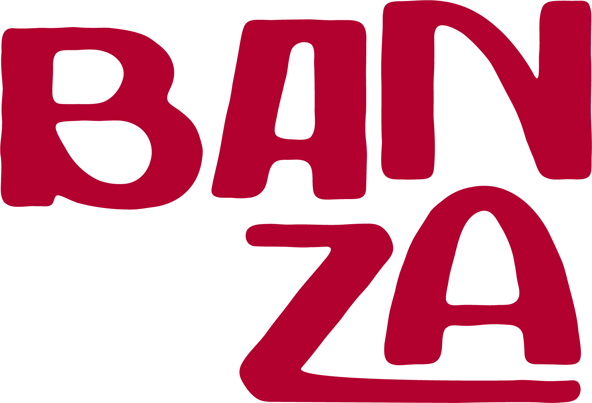
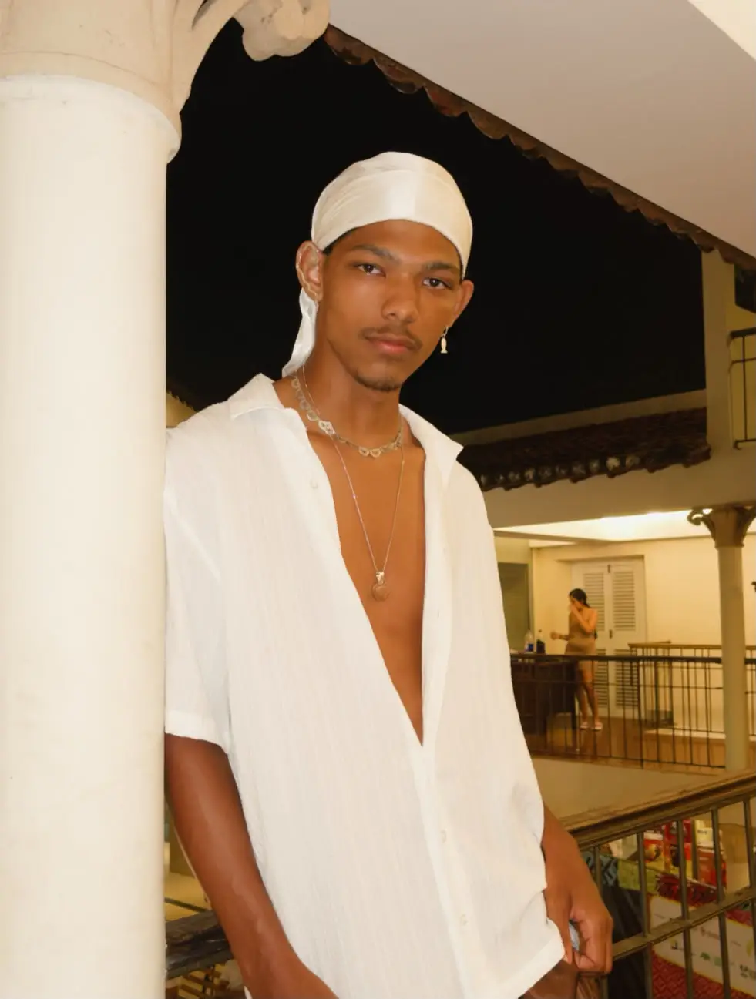
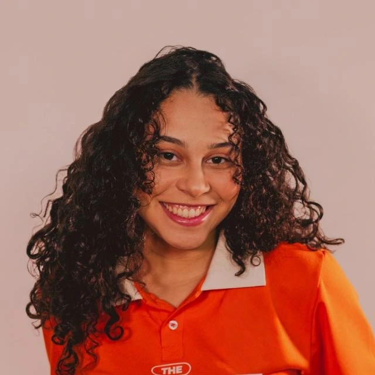
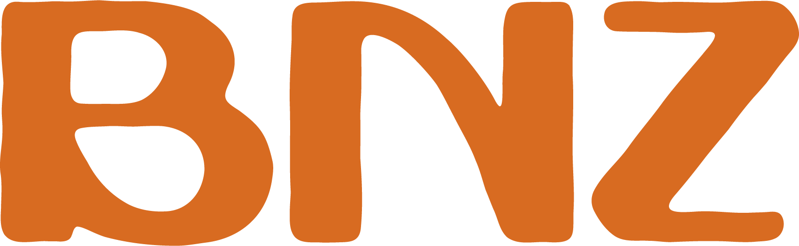

Há imagens que não cabem só no olhar. São texturas que quase podem ser tocadas, cores que parecem ter cheiro, roupas que lembram vozes antigas. A moda afro-brasileira é assim: ela desperta sentimentos antes de despertar ideias. Cada referência aqui é uma sensação guardada em foto.
Há algo de revolucionário no simples ato de se vestir quando o corpo carrega memórias que o mundo tentou apagar.
A moda afro-brasileira não é uma categoria: é o centro, é o início, é o fundamento visual de boa parte do que o Brasil chama de estilo.
BANZA existe para devolver esse protagonismo ao seu lugar de origem.
Desenvolvimento

Identidade Visual

Curadoria & Pesquisa
Redação
Prof. Orientador
Colocar a identidade
afro-brasileira
como centro da moda.
